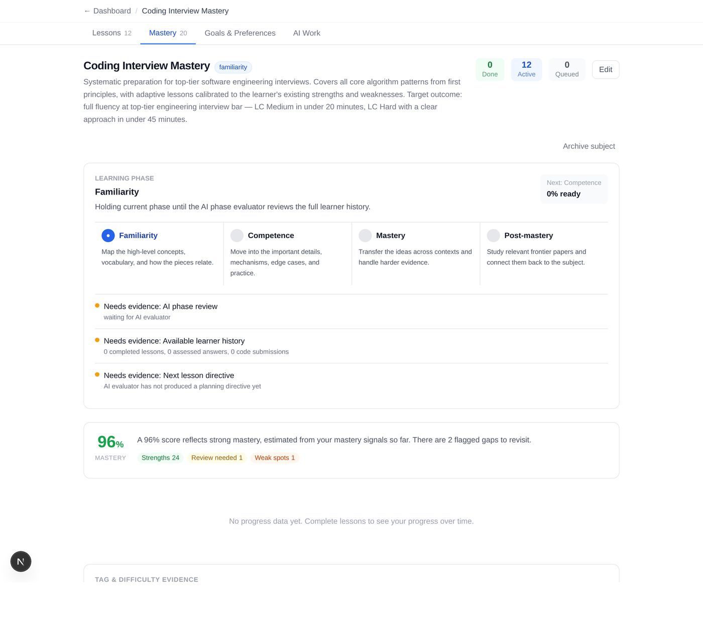
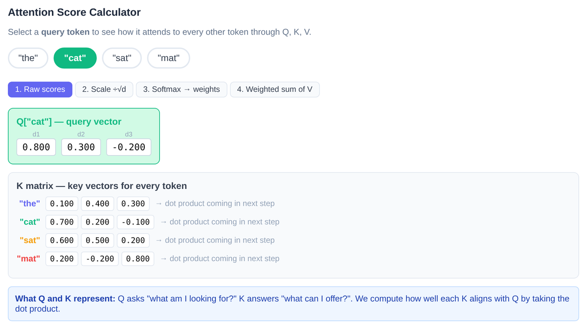
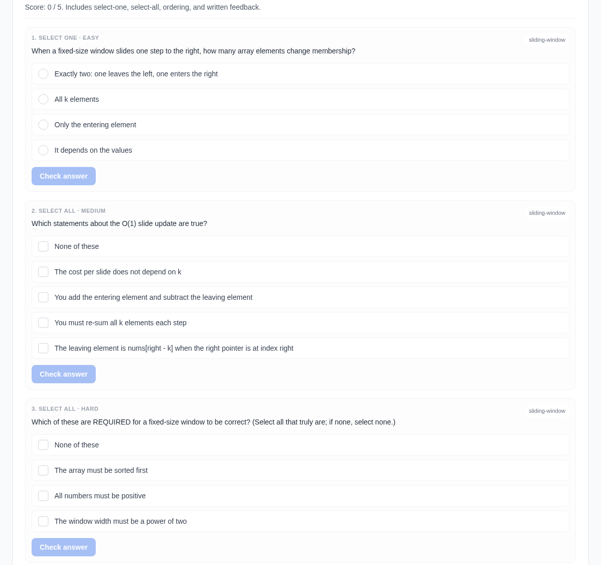
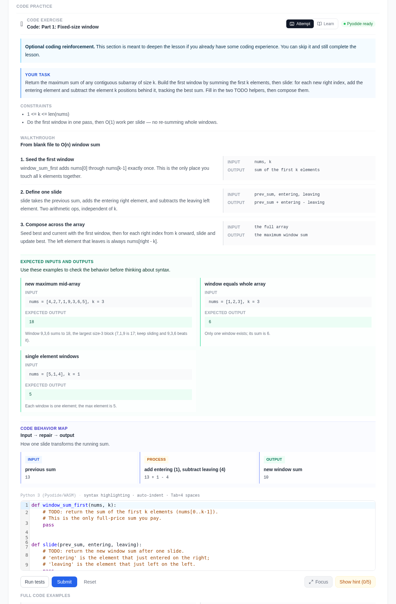
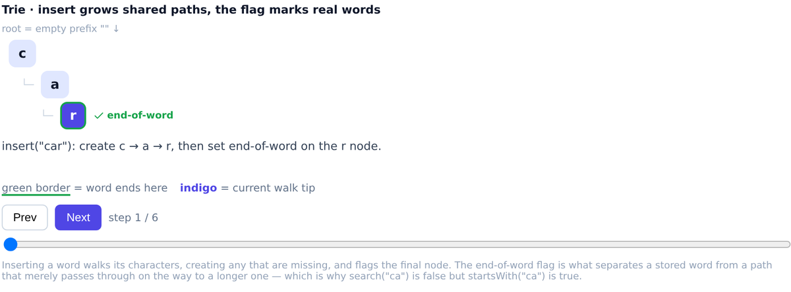
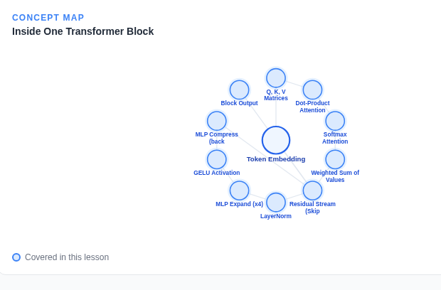
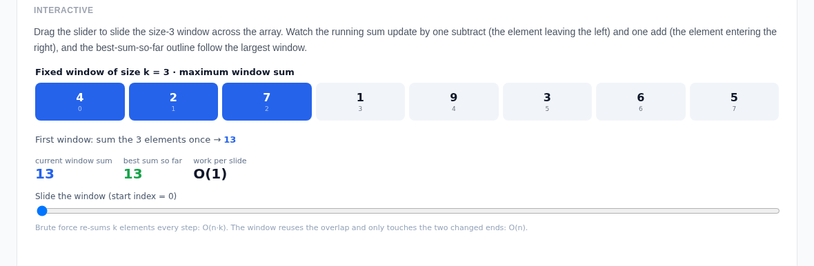
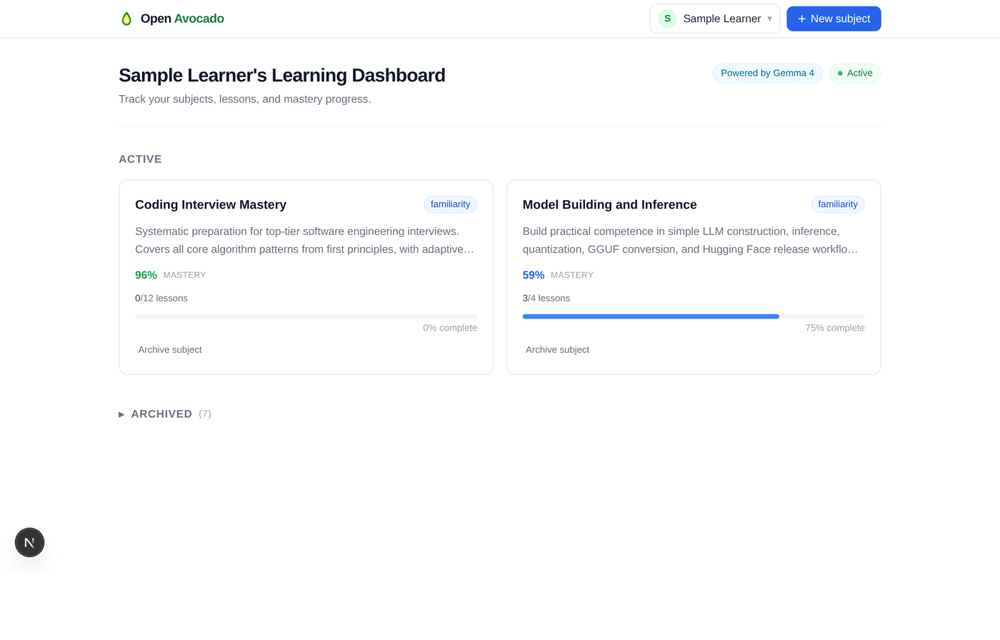
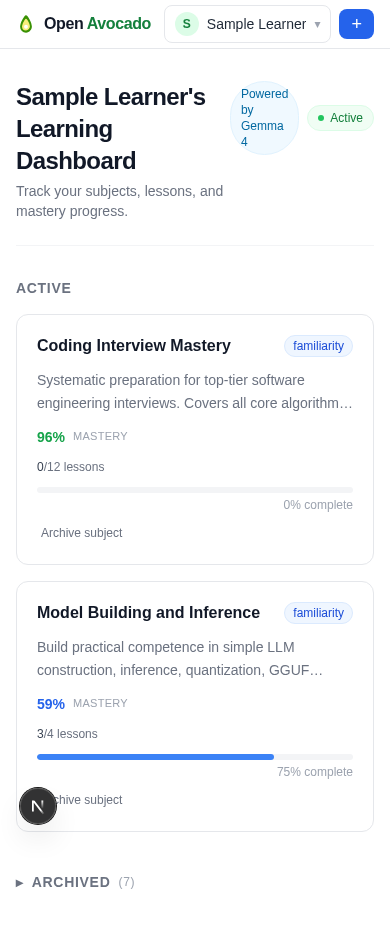
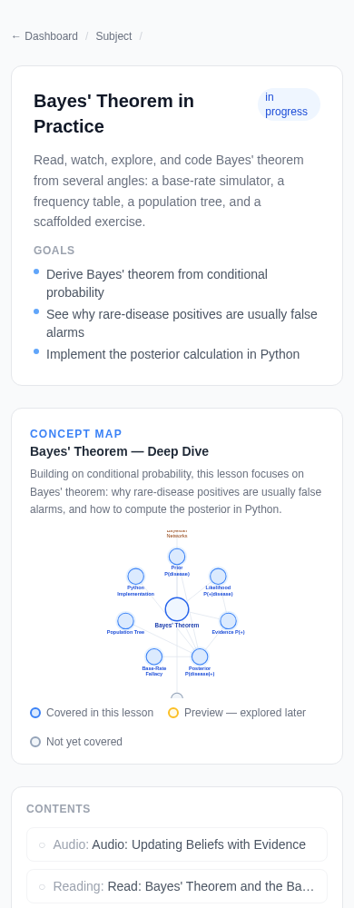

Empower human learning
Open Avocado
A free, open-source adaptive learning platform powered by AI. Set a goal, and it keeps evidence of what you actually know, then generates the single next lesson — with narration, interactive visuals, code, and quizzes — to move you from familiarity to mastery.
Live public site: https://frankhli843.github.io/openavocado/
Feature walkthrough with voiceover — a guided tour of Open Avocado: subjects and evidence-based mastery, interactive visualizations, adaptive quizzes, and progress; the three ways to run it (a local LLM for privacy, your own API key for the fastest start, or an agent harness for richer generation); and a side-by-side audio-synced lesson video the platform generates, ending with how to try the live demo.
Our mission
Empower human learning — for everyone, freely.
Open Avocado continues a mission that began in 2017 as AvocadoCore (also known as AVO), a student-built adaptive learning platform founded on a simple belief: with the right learning strategy and personalized tutoring, no one should ever have to struggle with learning.
It set out to fix three problems in education — an inefficient, one-size-fits-all approach; a lack of personalized attention; and the unequal distribution of educational resources. It customized each learner's plan, gave instant feedback, and taught exactly what they needed next, complementing teachers and open textbooks rather than replacing them. AVO later took part in a 2019 Western Accelerator cohort, which produced its accelerator-era pitch and public materials.
The AI era finally makes that mission reachable for everyone. Open Avocado is the open-source, free continuation of that idea — modern AI in place of scarce human tutors, and a platform anyone, anywhere can run, extend, and learn from.
How the adaptive loop works
Most courses are a fixed list of lessons for an average student. Open Avocado treats learning as a loop driven by evidence — so the next lesson is always the one you need.
Define the goal
Name a subject and what you want to be able to do. Open Avocado runs an initial assessment to map where you stand.
Keep the evidence
Every answer, code submission, quiz result, and diagnostic becomes a durable mastery signal.
Generate the next lesson
An AI lesson generator reads the evidence and authors the single next lesson that closes the biggest gap with the least effort.
Grow to mastery
You move from familiarity to competence to mastery — and the loop repeats.

Progress you can see and trust
Open Avocado holds a phase for a subject until it has enough evidence to advance. It shows exactly what it is waiting on — completed lessons, assessed answers, code submissions — so progress is never a mystery number.
Per-subject mastery scores, tags, and difficulty are visible to the learner and fed back into what gets generated next.
See a lesson come to life
Every lesson is a full workspace: a knowledge-graph orientation, narrated walkthrough, bespoke interactive visualizations, browser-run code, and adaptive quizzes — all real screenshots below.







A calm home for everything you're learning
Track multiple subjects side by side, each with its own mastery score, phase, and lesson progress. Open a subject to see its lessons, mastery breakdown, goals, and the AI's planning work.
Everything is responsive, so the full lesson workspace — audio, interactives, code, and quizzes — works on a phone as well as a desktop.


What every lesson contains
Not slides. A full, multimodal workspace built for the concept in front of you.
Narrated walkthrough
A comprehensive audio session with a learner-visible transcript and a synced visual timeline that changes as the audio advances.
Bespoke interactives
Purpose-built, sandboxed visual artifacts for each concept — not generic widgets — rendered from the database and mobile-verified.
Scaffolded code
Browser-run Python (Pyodide) with guided steps, progressive hints, worked examples, and public + hidden tests.
Adaptive assessment
One-question-at-a-time multiple choice plus freeform questions, immediate grading, and requeued misses.
Knowledge-graph orientation
Each lesson opens by showing where it sits in the subject so the learner keeps the end-to-end picture.
Mastery tracking
Per-subject mastery scores, tags, difficulty, and progress graphs over time — visible and fed back into generation.
Run it your way
Open Avocado separates the app from the lesson generator behind a small adapter interface, so you can plug in whatever produces lessons. Start fastest with a hosted API key, keep everything private with your own local LLM, or hand authoring to an agent runtime — pick what fits you.
Direct API key ready
Fastest start. Bring an OpenAI or Google AI Studio key and go.
Your own local LLM ready
Privacy / offline / self-hosted. Any OpenAI-compatible local server — llama.cpp, Ollama, vLLM, LM Studio. No cloud key, data stays on your machine.
Gemmaclaw partial
A specific local-model gateway example (Gemma) over the same OpenAI-compatible path.
OpenClaw ready
Hand lesson generation to an external agent/task runner via the task adapter.
Hermes planned
Wire a local Hermes agent runtime through the agent-harness command adapter.
Or drive setup with an agentic coding tool — paste a prompt and let the agent stand Open Avocado up for you:
Claude Code prompt
Point Anthropic's agentic CLI at the repo with a setup prompt; it installs, runs, and extends Open Avocado.
Codex prompt
Drive setup and lesson authoring with OpenAI's Codex CLI via a copy-paste prompt.
OpenCode prompt
Use the open-source OpenCode terminal agent to install, run, and author lessons.
Antigravity prompt
Point Google's Antigravity agent platform at the repo with a setup prompt.
Open source & community
Built in the open, free to run
Open Avocado is free and open source. Run it on your own machine, read every line, swap the model runtime, and extend the lesson generator — no lock-in, no paywall between a learner and the next lesson.
Free & open
MIT-spirited, self-hostable, and transparent end to end.
Local-first & private
Your data stays in a local SQLite database. Provider keys are encrypted and never sent to the browser.
Pluggable runtimes
A tiny adapter interface lets a cloud key, a local model, or an agent runtime drive generation.
Contribution-friendly
Clear docs, a public-readiness audit, and a separate-QA authoring model make it easy to help.
Who it's for
One evidence-driven engine, useful from your first hour to your hardest problem set.
Self-directed learners
Learn a subject on your own terms, with a tutor that adapts to what you actually know.
Developers & builders
Fork it, plug in your model or agent, and build adaptive learning into your own product.
Educators & tinkerers
Author lessons with a generic agent/skill model and a real quality bar, not one-size-fits-all content.
Researchers
An open, inspectable testbed for evidence-first, agent-generated, adaptive learning.
Explore the docs
Everything a new contributor or self-hoster needs, one card away.
Quick Start
Install, seed a database, and run the app locally in a few commands.
Architecture
Core entities, the evidence loop, and the generation/completion flow.
Lesson Authoring
The generic agent/skill model, quality bar, and separate-QA workflow.
Configuration
Environment variables, providers, adapters, and API-key handling.
Contributing
How to set up, test, and propose changes.
Deployment
Serving the app and publishing this site to GitHub Pages.
Start learning in the open
Run Open Avocado locally in a few minutes, or read how the adaptive loop works.